Gorlev 1
Grobkörniger, hellgrauer Granit mit zahlreichem roten Korn
Höhe ü. d. Fußboden: 238 cm
total: 315 cm
Breite Seite A: 88 cm
Seite B: 104 cm
Dicke ca. : 35 cm
Runenhöhe: 17 - 32 cm
Runeninschrift :
Thjodvi errichtete diesen Stein zum Andenken an Odinkar. (Es folgt das jg. Futhark) Genieße des Grabes wohl. (Es folgt die magische Buchstabenfolge: pmkiiissstttiiilll) Ich setzte die Runen richtig. Gunne, Armund ...

Gorlev 2
Höhe ü. d. Fußboden: 169 cm
Breite: 120 cm
Dicke: 56 cm
Runenhöhe: 13,4 - 26 cm
Runeninschrift :
Thorgot errichtete diesen Stein zum Andenken an seinen Vater Halvdan.

Gørlev - Letztes Update 26.11.2024
Navidaten: 55.53784 11.22628 oder: Kirkevangen 14B, 4281 Gørlev
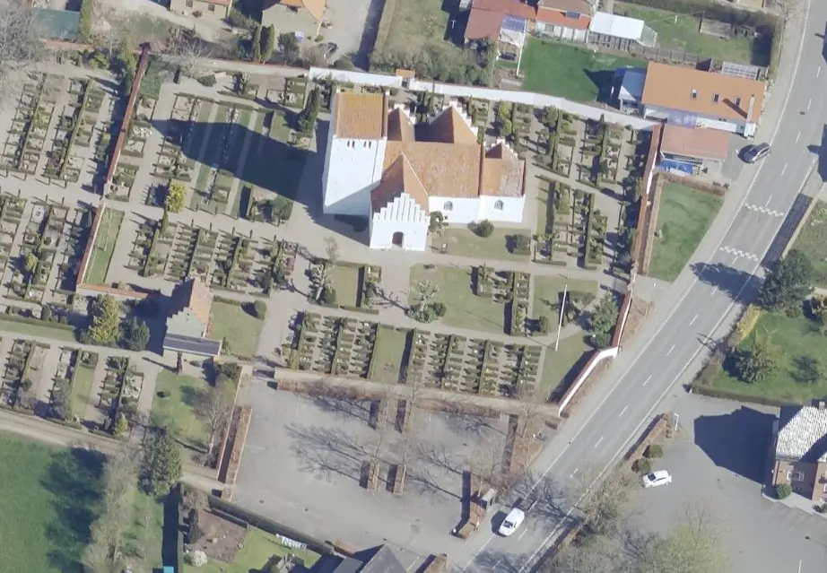
Dies ist ein Luftfoto vom 19.04.2023 der Gørlev Kirche von Skråfoto. Skråfoto ist eine Webanwendung, die von der Dänische Agentur für Datenversorgung und Infrastruktur weltweit kostenlos bereitgestellt wird - frei von Urheberrechten. Die Aufnahmen werden seit 2017 alle zwei Jahre erneuert und neben einer Senkrechtaufnahme wird ein Schrägbild aus jeder Himmelsrichtung angeboten, das man über eine Adresssuche aufrufen kann.
Bei meiner 2016er Wikinger-Tour in Dänemark kam ich auch zur Kirche in Gørlev. Am Sonntag, 28.08.16, war die Kirche leider geschlossen. Da ich auf meinem Heimweg am Mittwoch, 31.08.2016, nochmals durch Gørlev kam, war ich hocherfreut, dass die Kirche wenigstens diesmal geöffnet hatte.
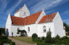 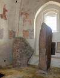 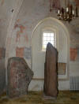 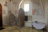


Laut einer Webseite des Gørlev Tourismusbüros ist die Kirche immer wie folgt geöffnet: Mo-Do von 07.00 bis 15.00 Uhr / Fr von 07.00 bis 12.00 Uhr - abgerufen 16.11.2024.
Gørlev 1 - Letztes Update 16.11.2024
Listennummer : DR 239 / DK Sj 46
Transliteration:
Seite A: þiauþui : risþi : stin þąnsi : aft uþinkaur : | fuþąrkhniastbmlR : niut ual kums :
Seite B: þmkiiissstttiiilll (:) iak sata ru--ri(t) | kuni armutR kru(b)------
Als im Jahre 1921 eine neue Treppe im südlichen Waffenhaus der Kirche von Gørlev angelegt werden sollte, wurde durch den ausführenden Maurermeister, Laurids Peder Christiansen (*21.01.1877 - 14.07.1948),
 Bildquelle:
Gørlev Lokalhistoriske
Arkiv
-
Lizenz:
Public Domain
Bildquelle:
Gørlev Lokalhistoriske
Arkiv
-
Lizenz:
Public Domain
unter der alten Treppe ein Stein mit sonderbaren Zeichen entdeckt. Der örtliche Pfarrer, Pastor Axel Høyrup (*11.06.1872 - 15.02.1933), gab ihm trotzdem den Auftrag eine neue Treppe auszuführen und Zement wurde über den Stein gegossen.
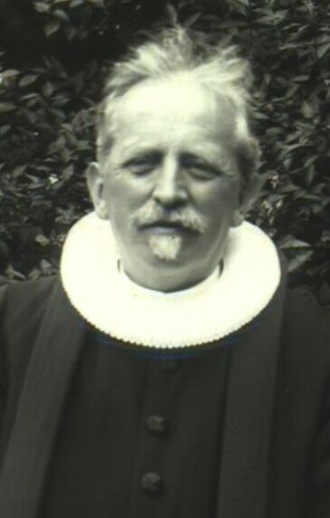
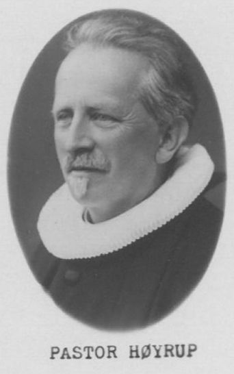
Bildquelle: Königliche Bibliothek Kopenhagen / Trøst-Hansens sognekort - jeweils Lizenz: Public Domain
Am Tag danach (Sonntag, 8. Mai 1921) sprach der Maurer Christiansen aber darüber mit dem Kassierer D. Møller (der Gørlev Zuckerfabrik - zu der Person gibt es leider keine weiterreichenden Informationen laut Auskunft des Gørlev Lokalhistoriske Arkiv vom 26.11.2024), der den Fall sofort untersuchte. Als der die neu gegossenen Zementstufen erreichte, gelangte er an die Spitze des Steins, wo er zweifellos Runenzeichen fand. Man benachrichtigte das Nationalmuseum in Kopenhagen über den Fund und ein paar Tage später kam Museuminspektor Kai Uldall (*14.09.1890 - 28.05.1988) nach Gørlev.
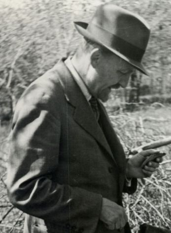
Bildquelle: Digitale Bildsammlung Nationalmuseum Kopenhagen - Nordisk Pressefoto A/S - Lizenz: Public Domain - von mir am 16.11.2024 zugeschnittenDie Betontreppen wurden zerhackt; der Zement war zum Glück nur oberflächlich erstarrt und ließ sich leicht von dem Stein entfernen. Der mächtige Granitstein - 3,15 m hoch - erstreckte sich mit seiner jetzigen Ostseite nach oben bis unter die Treppe und unter dem Mauerwerk des Türrahmens. Der Stein wurde freigegraben und aus seiner Lage geschaukelt. Mittels einer Kranvorrichtung wurde der ca. 5000 kg schwere Stein aufgestellt. Dabei erwies sich, dass er auf beiden Seiten Runenzeichen hatte. Das Recycling von älterem Steinmaterial ist in den alten Kirchen weit verbreitet.
Der Stein stand nach seiner Entdeckung eine Zeitlang im Kirchhof, bis er 1938 ins Waffenhaus gebracht wurde, wo er heute noch steht. Inzwischen hat er vom Runenstein Gørlev 2 Gesellschaft bekommen. Die Kirche besteht aus einem Chor und einem Kirchenschiff sowie den Überresten eines Turms, die alle als ein einziges Bauwerk erbaut wurden, möglicherweise noch im 11. Jahrhundert. Darüber hinaus kamen im Spätmittelalter vier Anbauten hinzu.
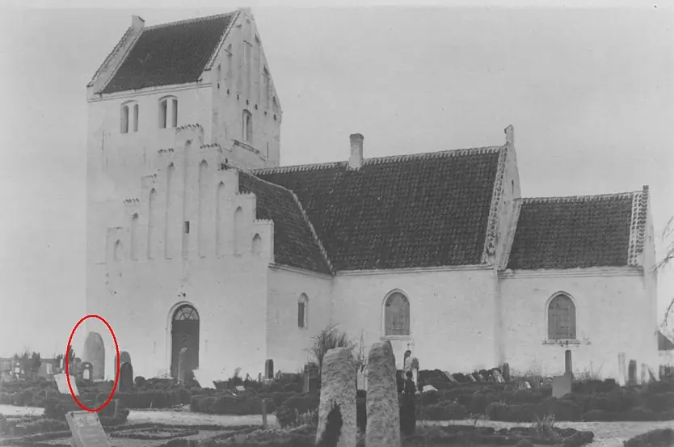
Bildquelle: Trøst-Hansens sognekort - Aufnahmedatum unbekannt - Lizenz: Public DomainDer Gørlev-Stein 1 gehört zur ältesten Periode der dänischen Runensteine und kann schon um das Jahr 800 datiert werden. Aufgrund seiner Inschrift, die auf zwei Seiten des Steins angebracht ist, handelt es sich zweifelsohne um einen der interessantesten Runensteine Dänemarks. Der Name "Odinkar" ist vor allem aus dem Dänemark der Wikingerzeit bekannt, wo er in den höchsten sozialen Schichten verwendet wurde. Den Runologen zufolge könnte er von daher mit den wenigen anderen Runensteinen, auf den dieser Name vorkommt - Skivum - Haithabu 4 - Skjern 2 - in Verbindung gebracht werden. Die aktuelle Chefrunologin am dänischen Nationalmuseum Lisbeth M. Imer (*1973) schreibt z.B. in ihrem 2016 erschienen Buch "Danmarks Runesten - en fortælling" auf der S. 129 (übersetzt): "...dass Asfrid, die auf dem Runenstein Haithabu 4 erwähnt wird, die Tochter Odinkars vom Stein Gørlev 1 und eventuell eine Schwester von Thyra auf dem kleinen Runenstein von Jelling ist...." Dann müsste seine Datierung aber weit in Richtung dem Jahr 900 verschoben werden.

 Bildquelle:
Aarbøger fra Holbæk Amt, 1923 - Zeichnung
Albert Thomsen -
Lizenz:
Public Domain - Leserichtung von mir eingefügt
Bildquelle:
Aarbøger fra Holbæk Amt, 1923 - Zeichnung
Albert Thomsen -
Lizenz:
Public Domain - Leserichtung von mir eingefügt
Die Grabbannungsformel Genieße des Grabes wohl (Seite A), die den Toten im Grabe festhalten soll, begegnet uns auch auf dem Stein von Nørre Nærå/Fünen. Die magische Buchstabenfolge ergibt drei Wörter auf -istil mit jeweils verschiedenem Anlaut: pistil, mistil, kistil Distel, Mistelzweig, Kistchen. Der Zweck dieser Formelwörter, die genauso auf dem Ledberg-Stein (Östergötland/Schweden) und in ähnlicher Anordnung noch in anderen Inschriften vorkommen, ist unbekannt. Ausgehend von den Fluchstrophen der zauberkundigen Busla (Edda), die nach der 9. und letzten Strophe:
"Sechs
kommen hier:
Sag ihre Namen,
entziffre alle!
Ich zeige sie dir.
Rätst du sie nicht,
wie ichs richtig heiße,
so fahr hin zur Hel,
von Hunden zerfleischt,
deine Seele aber
sinke zur Hölle!"
eine sechsfache in Runen geschriebene Folge von istil-Wörtern bietet:
 Quelle: Webseite "Heimskringla"
-
Bósa saga ok Herrauðs -
Infos auf deutsch
Quelle: Webseite "Heimskringla"
-
Bósa saga ok Herrauðs -
Infos auf deutsch
hat die Erklärung als Fluchwörter (hier: gegen Grabschänder ?) noch am meisten für sich. Der Rest der Inschrift (Seite B rechte Linie), das fragmentarische kuni?mutRkru..., soll nach Erik Moltke (*04.04.1901 - 19.10.1984, Runologe, Historiker) - Runes and there Origins, 1985, S. 174 - von einem anderen Runenmeister angebracht worden sein, nach DR Sp. 294 wurde sie später angebracht als die Hauptinschrift. Dafür spricht, daß die pistil-Formel zwischen Rahmenlinien in der Mitte der Steinseite steht, was nicht zu der Intention einer zweizeiligen Inschrift paßt, und daß die Runen der zweiten Zeile am Ende kleiner werden, sich an der oberen Zeile orientieren. Moltke schreibt dort, dass die Runen in der 2. Linie (rechte Linie) einen viel gröberen Charakter und eine Unregelmäßigkeit aufweist. Interessanterweise steht hier als m-Rune die ältere Form M, was bedeutet, daß die zweite Inschrift nicht sehr viel später als die erste angebracht worden sein kann. Über ihre Funktion läßt sich nichts Sicheres sagen, sie enthält vielleicht am Anfang zwei Männernamen, der Rest der Runen ist zerstört (Quelle: Brinkmann - 1995 - S. 358 - siehe Literaturhinweise).
Das Futhark (Runenalphabet) in der zweiten Zeile ist nahezu identisch mit dem des Malt-Steines...
 Quelle: Moltke -
Runes and there Origins - 1985 - S. 28
Quelle: Moltke -
Runes and there Origins - 1985 - S. 28
... und ist neben Malt der früheste Beleg für eine vollständige Runenreihe des Jüngeren Futhark mit den sog. "dänischen Normalrunen", er bietet die frühesten (sicheren) Belege für das Eintreten der (ostnordischen) Monophthongierung, er bietet neben dem Futhark weitere magische Formeln, und seine Auftraggeberin wie der Tote sind vielleicht mit dem dänischen Königshaus der Jelling-Dynastie in Verbindung zu bringen. Schließlich findet sich auf ihm zum ersten Mal die später häufige Steinsetzungs-Formel in der Form raisa stain (Quelle: Brinkmann - 1995 - S. 356 - siehe Literaturhinweise).
Fotografien von meinem Besuch am 31.08.2016:
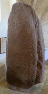 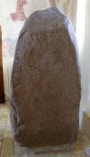 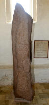


Durch Erik Moltke (*04.04.1901 - 19.10.1984, Runologe, Historiker) wurde der Stein 1 am 24.10.1928 im Beisein von Erling Ferdinand Hoffmeyer (*13.03.1901 - 03.04.1975, Redakteur und Chefbibliothekar, Mitarbeiter bei Danmarks Runeindskrifter 1928-32)
Bildquelle: ResearchGate - Lizenz: CC-BY-SA
vor Ort begutachtet. Bei extrem schlechten Wetter- und Lichtverhältnissen fertigten sie Pappabdrücke der Inschrift. Moltke berichtet dazu (siehe Literaturhinweise - sein Beitrag 1929): "...ein starker Sturm wehte, der unaufhörlich unsere Pappabdrücke angriff, und der Himmel war die meiste Zeit, in der wir uns am Stein aufhielten, bewölkt, so dass es praktisch unmöglich war, bei der Untersuchung des Steins selbst zu einem Ergebnis zu kommen..." und weiter: "...Alles kam also auf gute Kartonabdrücke an. Während Ludv. F. A. Wimmer (*07.02.1839 - 29.04.1920, Philologe und Runenforscher)
 Bildquelle:
Fotografie zw. 1877-1900 von Fotograf Hansen & Weller
-
Det Kgl. Biblioteks billedsamling - Lizenz:
Public Domain
Bildquelle:
Fotografie zw. 1877-1900 von Fotograf Hansen & Weller
-
Det Kgl. Biblioteks billedsamling - Lizenz:
Public Domain
eher dünnen Karton verwendete, der die unglückliche Eigenschaft hatte, dass er auf dem Stein trocknen musste, um den Abdruck der Runen zu erhalten, wäre er auch in diesem Fall hilflos gewesen, da die im Sturm sofort zerrissen wären... Wir verwendeten in unserer Studie dicken, grauen Matrixkarton, der in jüngster Zeit nach freundlicher Information von Prof. Ebbe Oscar Tuneld (*07.04.1877 - 27.06.1947, Linguist)
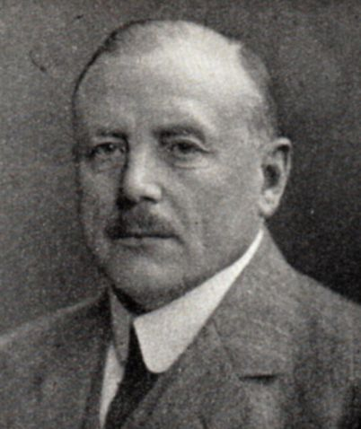
Bildquelle: Wikipedia - Lizenz: Public Domainin Lund für Runensteinstudien verwendet wurde; und es ist dem Vorteil dieser Arbeit zu verdanken, dass das Ergebnis meiner Untersuchung in Verbindung mit meinen Aufzeichnungen über eine Untersuchung des Steins selbst, die ich vor einigen Jahren gemacht habe, so günstig ausgefallen ist..."
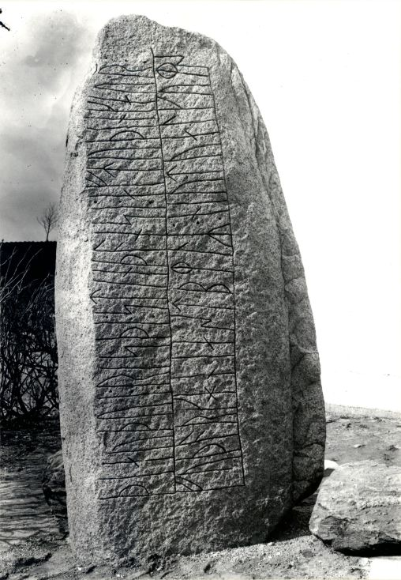
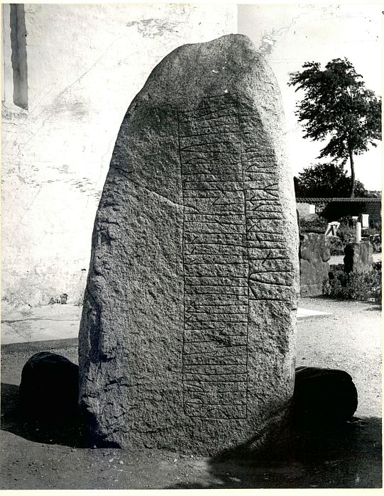
Am 28.02.1929 und am 05.08.1930 fotografierte Erik Moltke den Runenstein.
Gørlev Stein 1 - Seite A - Seite B - Digitalen Sammlung des Nationalmuseums in Kopenhagen - Für diese Fotos gilt jeweils die Lizenz CC-BY-SA.
Im Vorfeld zu dem 2016 erschienenen Buch von Lisbeth M. Imer (*1973, Runologin am Nationalmuseum Kopenhagen) "Danmarks Runesten - en fortælling" reiste sie mit dem Fotografen Roberto Fortuna zur Bestandsaufnahme durch die Lande. Dieser hat die beiden Runensteine im November 2012 mit Schräglicht aufgenommen und darüber wirklich herausragende Fotos erzielt.
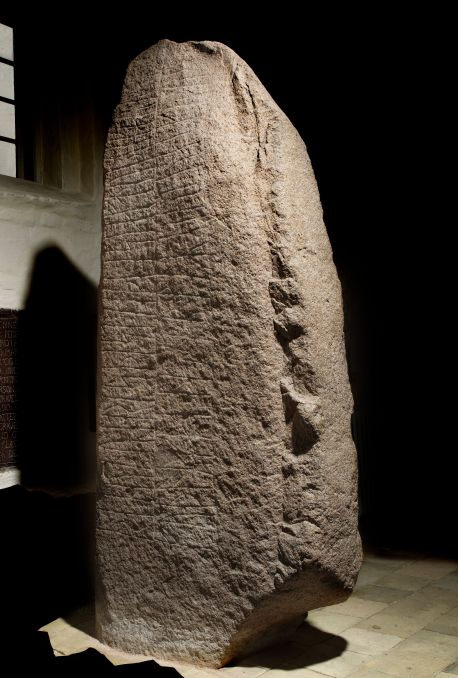
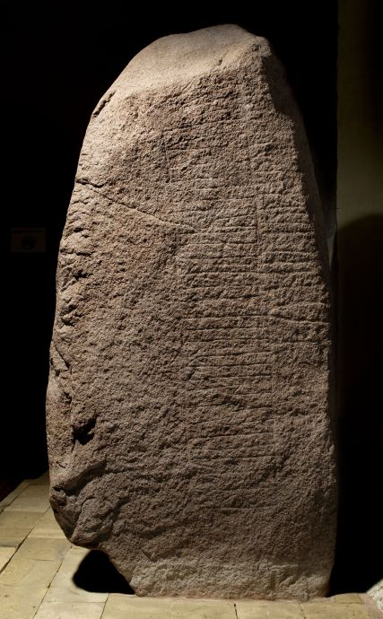
Bildquelle jeweils: Digitalen Sammlung des Nationalmuseums in Kopenhagen - Seite A - Seite B - Lizenz jeweils: CC-BY-SA 3.0
Von dem Runenstein Gørlev 1 wurden auch Ansichtskarten vertrieben, als er noch auf dem Kirchhof (bis 1938) stand. Diese hier befindet sich in meiner Sammlung, wurde am 18.07.1934 geschrieben und einen Tag später wurden die beiden 5 Øre Briefmarken abgestempelt.
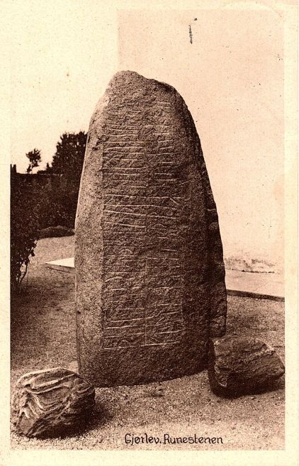
Karen Lunds Boghandel Giørlev - Fotograf unbekannt - Lizenz: Public DomainIm Internet findet sich über die Homepage der dänischen Runendatenbank hier alle Infos zu diesem Runenstein.
Der entsprechende Eintrag zu dem Runenstein in "Fund og Fortidsminder" ist hier verlinkt.
Über diesen Link finden sich zu dem Runenstein Gørlev 1 alle Informationen des Forschungsprojektes "Runes" der Akademie der Wissenschaften zu Göttingen.
GørlevGørlev 2 - Letztes Update 16.11.2024
Listennummer : DK Sj 47
Transliteration: þurkutru : sati : stin | þinsi : aftiR halftan : fauþur : sin | þþþuuu-nnn-
Der Stein wurde 1964 im Zusammenhang mit einer umfassenden Restaurierung der Gørlev Kirche, unter der Projektleitung des fachkundigen Kopenhagener Kirchenarchitekten Viggo Hardie-Fischer (*1906 -1983) in Zusammenarbeit mit dem Nationalmuseum in Kopenhagen, gefunden und im selben Jahr in der Waffenhaus neben dem Runenstein Gørlev 1 errichtet. Er wurde in der westlichen Steinlage der spätgotischen Turmmauer gefunden, könnte aber von dem identifizierten älteren, schmaleren romanischen Turm stammen (siehe Literaturhinweise - Stoklund 2003 - S. 67). Die Inschrift, die von den Runologen in die Zeit von 970 - 1020 datiert wird, verläuft auf einer Breitseite. Die Inschrift verwendet verschiedene Satzzeichentyp(en): Ein Kreuz, zwei vertikale Linien und drei Punkte. Der Verlauf der Inschrift - bustrophed - habe ich hier visualisiert.
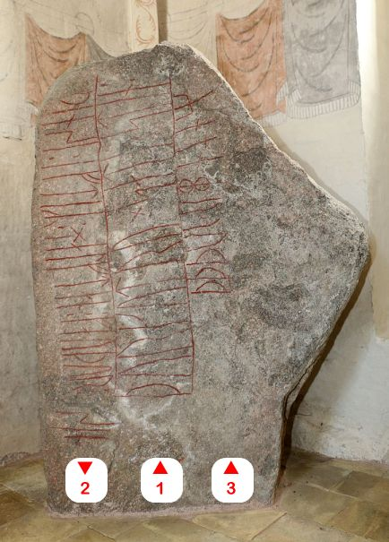
Bild vom Besuch am 31.08.2016:


Der Stein 2 wurde unmittelbar nach seiner Entdeckung und Aufstellung 1964 ebenfalls durch Erik Moltke (*04.04.1901 - 19.10.1984, Runologe, Historiker) abgelichtet.
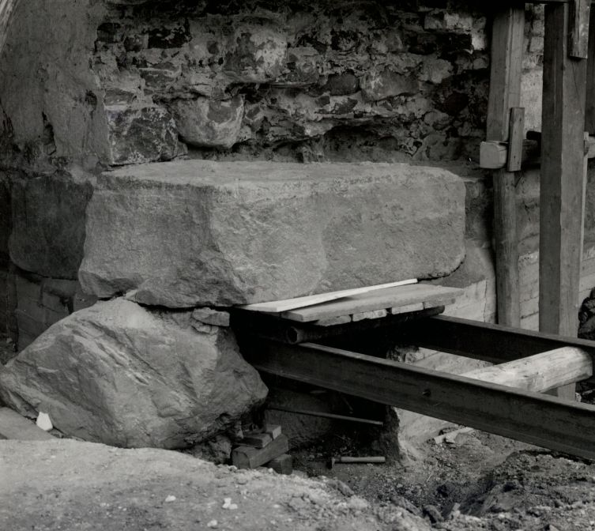
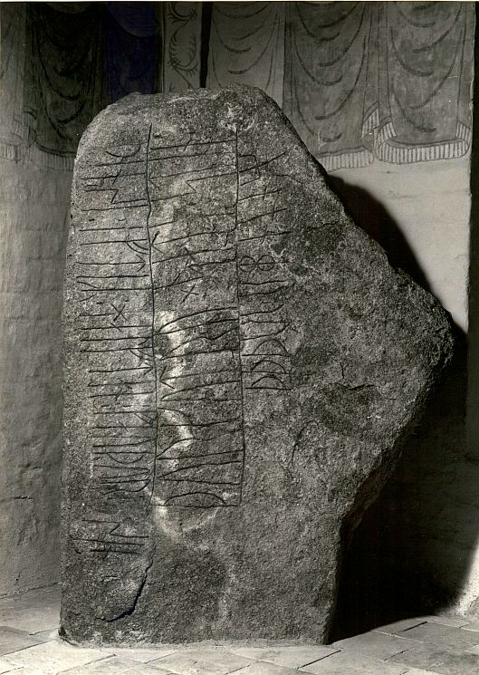
Gørlev Stein 2 - Digitalen Sammlung des Nationalmuseums in Kopenhagen - Stein in situ - Stein nach Aufstellung - jeweils Lizenz CC-BY-SA
Gørlev 2 - Fotograf: Roberto Fortuna
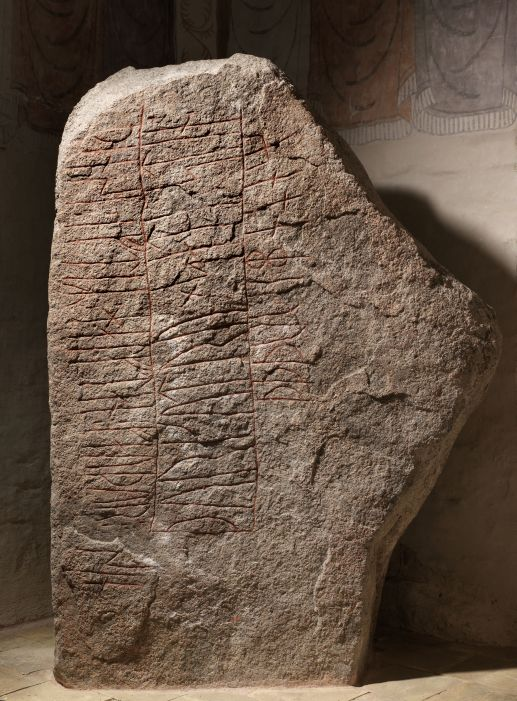
Bildquelle: Digitalen Sammlung des Nationalmuseums in Kopenhagen - Lizenz: CC-BY-SA 3.0
Beide Runensteine im Waffenhaus der Kirche von Gørlev - Fotograf: Roberto Fortuna
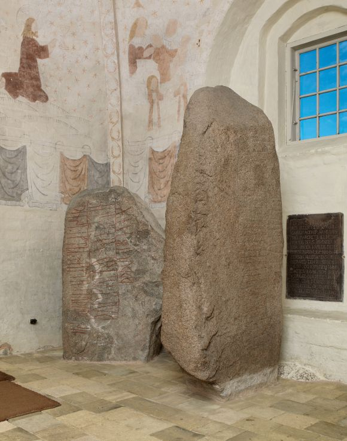
Bildquelle: Digitalen Sammlung des Nationalmuseums in Kopenhagen - Lizenz: CC-BY-SA 3.0
Hier findet sich ein Bericht in dänischer Sprache mit etlichen Fotos, die bei der Entstehung dieser professionellen Fotografien der beiden Runensteine durch den Fotografen Roberto Fortuna in Zusammenarbeit mit der Lisbeth M. Imer (*1973, Runologin am Nationalmuseum Kopenhagen) im November 2012 im Waffenhaus der Kirche von Gørlev aufgenommen wurden.
Im Internet findet sich über die Homepage der dänischen Runendatenbank hier alle Infos zu diesem Runenstein.
Der entsprechende Eintrag zu dem Runenstein in "Fund og Fortidsminder" ist hier verlinkt.
Über diesen Link kann man zu dem Runenstein 2 Informationen des Forschungsprojektes "Runes" der Akademie der Wissenschaften zu Göttingen abrufen.
Auf der Webseite von "Danmarks kirker" findet man zu der Kirche von Gørlev eine reich bebilderte, dänisch sprachige 31-seitige Arbeit aus dem Jahr 1982.
Literaturhinweise:
Johannes Brøndum-Nielsen (*02.12.1881 - 09.03.1977, Professor für nordische Sprachen - Universität Kopenhagen) - Runestenen i Görlev - Aarbøger fra Holbæk Amt, 1923, S. 37-52 (ab S. 153 in der pdf-Datei)
Erik Moltke (*04.04.1901 - 19.10.1984, Runologe, Historiker) - Bidrag til Tolkning af Gørlev-Stenen - Acta Philologica Scandinavica IV - 1929 - S. 172185
DR - Danmarks Runeindskrifter - Lis Jacobsen (*29.01.1882 - 18.06.1961, dänische Runologin und Archäologin) / Erik Moltke (*04.04.1901 - 19.10.1984, Runologe, Historiker) - DR 239 - Gørlev 1 - Sp. 292-294
Erik Moltke (*04.04.1901 - 19.10.1984, Runologe, Historiker) - Runes and there Origins - 1985 - S. 174 ff.
Thomas Birkmann (*18.10.1955, Runologe) - Von Ågedal bis Malt. Die skandinavischen Runeninschriften vom Ende des 5. bis Ende des 9. Jahrhunderts - Ergänzungsbände zum Reallexikon der Germanischen Altertumskunde 12 - 1995 - S. 356-360
Klaus Düwel (*10. 12.1935 - 31. 12.2020, war ein deutscher germanistischer und skandinavistischer Mediävist - Foto) - Runenkunde - 3. Auflage - 2001 - S. 89, 98 ff.
Marie Stoklund (*11.08.1934 - 03.09.2021, Runologin am dänischen Nationalmuseum) - Runestenene i Gørlev Kirke - Årbog for kulturhistorien i Holbæk Amt 2003 - S. 66 - 75 (S. 67 - 76 in der pdf-Datei)
Lisbeth M. Imer (*1973, Runologin am Nationalmuseum Kopenhagen) - Danish runestoneswhen and where? - Danish Journal of Archaeology - Vol. 3 - No. 2 - 2014 - S. 164174
Lisbeth M. Imer (*1973, Runologin am Nationalmuseum Kopenhagen) - Danmarks Runesten - en fortælling - 2016 - S. 125 ff.
Edith Marold (*02.07.1942, österreichische germanistische und skandinavistische Mediävistin) - 2021: Normalisierung und Transkription, ihre Funktionen und Anwendungsmöglichkeiten. Fragen eines Editors. In: Reading Runes.Proceedings of the Eighth International Symposium on Runes and Runic Inscriptions, Nyköping, Sweden, 26 September 2014. Ed. by MacLeod, Mindy, Marco Bianchi and Henrik Williams. Uppsala. (Runrön 24.) Pp. 95108